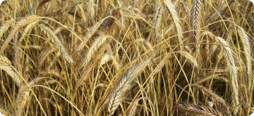

Кандидат на пост канцлера ФРГ Шольц назвал условия
коалиционного соглашения
Лидер Социал-демократической партии Германии (СДПГ) и кандидат на должность...

 ИА Красная Весна
ИА Красная Весна
Ученые доказали
экспериментальным путем пользу покровных культур
Новое исследование ученых университета Иллинойса объединяет полевые данные...

 Газета.Ru
Газета.Ru
Кандидат на пост канцлера ФРГ Шольц назвал условия коалиционного соглашения
Лидер Социал-демократической партии Германии (СДПГ) и кандидат на должность...
 Хайтек+
Хайтек+
Baidu запустила публичный
сервис роботакси Apollo Go в
Шанхае
Автопарк Baidu состоит из модифицированных электромобилей EV...

 Digger.ru
Digger.ru
Стали известны ёмкости аккумуляторов всех моделей
iPhone 13
Bo время презентации iPhone 13 Apple придала большое значения...

 Lenta.ru
Lenta.ru
Китайская марка JAC повысила
цены на лифтбек и пикап в
России
Две модели китайского бренда JAC из пяти, представленных на российском...

 Тарантас Ньюс
Тарантас Ньюс